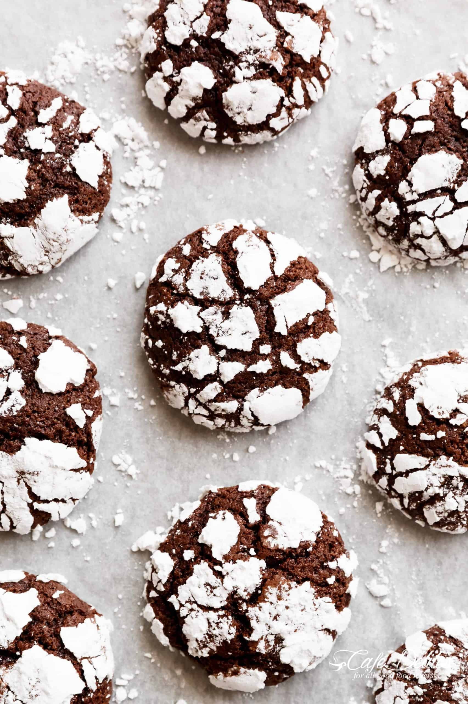

Crinkle Cookies Recipe

Description
Chocolate crinkle cookies have become a holiday staple, but they're also great any time of year. They're cake-like cookies made with unsweetened cocoa powder, vegetable oil, and a handful of other pantry staple ingredients.
Before baking, the cookies are coated in confectioners' sugar. When they bake up, they end up with a cracked (or "crinkled") effect.
They're the perfect cookie for brownie or Devil's food cake lovers because of their rich, fudgy flavor and texture.
Ingredients
- Flour
- Cocoa powder
- Baking powder, alt, vanilla extract
- White sugar, confectioners' sugar
- Oil
- Egg
Steps
- Mix sugar, cocoa, and oil together in a medium bowl. Beat in eggs, one at a time, until combined. Stir in vanilla.
- Combine flour, baking powder, and salt in another bowl. Gradually stir flour mixture into the cocoa mixture until thoroughly mixed. Cover dough and refrigerate for at least 4 hours.
- Preheat the oven to 350 degrees F (175 degrees C). Line two cookie sheets with parchment paper.
- Roll or scoop chilled dough into 1-inch balls. Coat each ball in confectioners' sugar and place 1 inch apart on the prepared cookie sheets.
- Bake in the preheated oven for 10 to 12 minutes. Let stand on the cookie sheet for a few minutes before transferring to wire racks to cool.